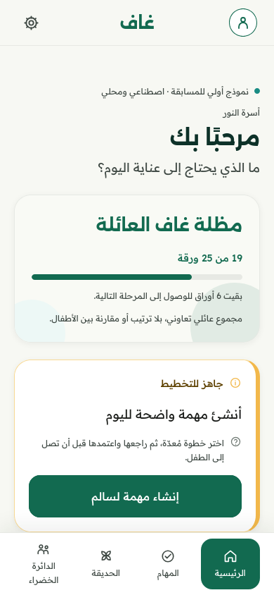
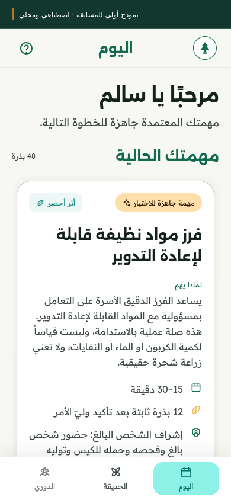
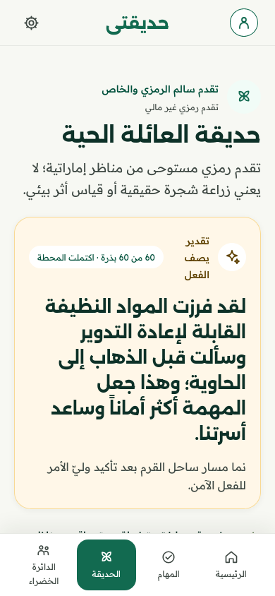

Rooted in UAE identityAndroid-first family application
Family time, one meaningful
step at a time.
Parent-approved activities, a growing virtual Ghaf tree, and shared memories.
Designed
to make everyday family participation easier to begin and recognise.
A family journey, in Arabic
A Parent makes space
Review a suitable activity
before assigning it.

A Child takes part
Try an approved task, with clear
steps and help when needed.

The effort is recognised
Parent confirmation connects
the action to symbolic progress.

Historical, checked-in prototype captures with synthetic data; earlier screen branding and sample family names remain visible.
One small action. A shared moment to remember.
-
01ReviewA Parent chooses
and approves a task. -
02Take partThe Child tries
the agreed activity. -
03Ask for helpBounded coaching
supports the next step. -
04ConfirmThe Parent recognises
the completed action. -
05RememberSymbolic growth;
an eligible text memory.
Make room for everyday life
Study plans and dated academic goals.
Text memories after approved shared Green
Impact activities.
Keep the experience comfortable
Arabic and English. Original six-screen onboarding.
Narration controls and
adjustable quiet nature audio.